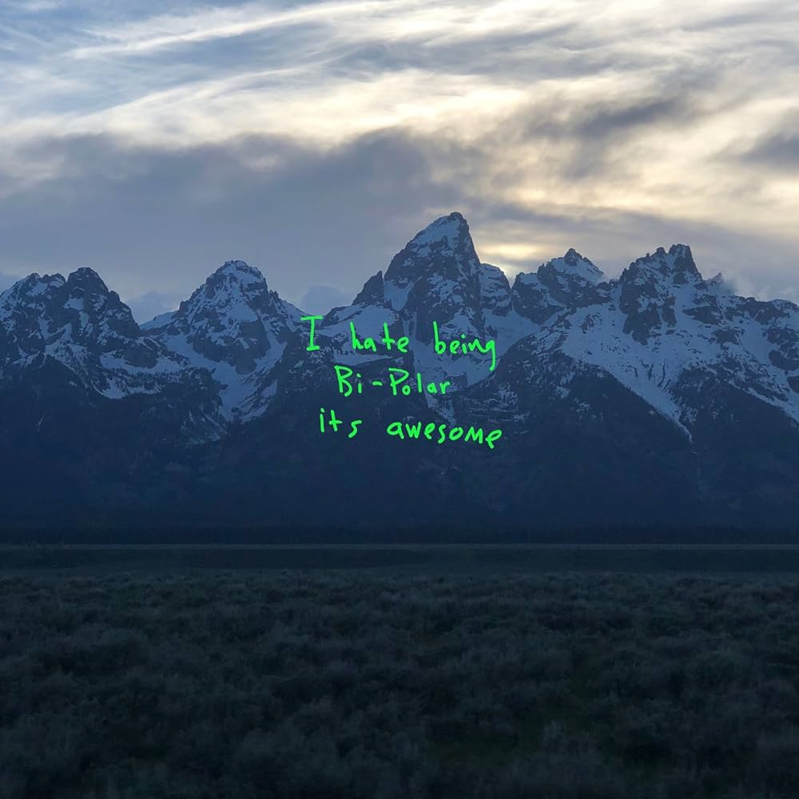

The College Dropout
The College Dropout Late Registration
Late Registration Graduation
Graduation 808s & Heartbreak
808s & Heartbreak My Beautiful Dark Twisted Fantasy
My Beautiful Dark Twisted Fantasy Yeezus
Yeezus The Life of Pablo
The Life of Pablo Ye
Ye Jesus Is King
Jesus Is King Donda
DondaYe
"Ye", released in 2018, was a deeply personal and introspective album that explored themes of mental health, family, and being famous. This wasn't just another rap album, it was a glimpse into Kanye's well being, with lyrics that display his struggles and insecurities.
Songs like "Ghost Town" and "Violent Crimes" showcased Kanye's vulenerability and the depth of his emotions, earning praise from fans and critics alike for being raw and authentic with his lyrics.
*below the image is Ghost Town, an iconic (and probably the most recognized) song on the album.
